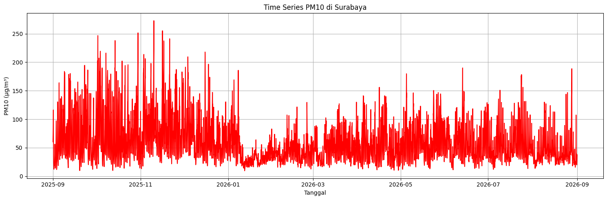

Business Understanding
Latar Belakang & Tujuan Proyek Kualitas udara merupakan salah satu faktor lingkungan yang berpengaruh langsung terhadap kesehatan masyarakat dan stabilitas ekosistem. Proyek ini dilakukan untuk mengekstraksi, memetakan, serta menganalisis pola time series parameter polutan di tingkat lokal.
Tujuan Utama: Mengidentifikasi tren konsentrasi polutan harian dan musiman selama periode 1 tahun (01 september 2025 – 31 Agustus 2026). Menyediakan basis data historis yang valid untuk pemetaan tingkat risiko pencemaran udara wilayah lokal.
Manfaat Analisis: Preventif Kesehatan: Memberikan gambaran pola fluktuasi polusi agar masyarakat dapat mengantisipasi paparan polutan berbahaya. Pengambilan Kebijakan: Menyediakan data terstruktur yang berguna sebagai acuan evaluasi kebijakan emisi kendaraan dan industri lokal.
Data Understanding
Data diambil dari Open-Meteo Air Quality API berdasarkan titik koordinat GeoJSON lokasi lokal.
Tabel Fitur Polutan
| PM2.5 | Partikulat halus diameter ≤ 2.5 µm. Berbahaya karena dapat menembus saluran pernapasan dalam. | Emisi pembakaran kendaraan, aktivitas industri. |
| PM10 | Partikulat kasar diameter ≤ 10 µm. Mengiritasi saluran pernapasan bagian atas. | Debu jalanan, aktivitas konstruksi/pembangunan. |
| CO | Karbon Monoksida. Gas beracun tak berbau pemicu penurunan kadar oksigen dalam darah. | Pembakaran bahan bakar fosil tidak sempurna. |
| NO2 | Nitrogen Dioksida. Gas reaktif penyebab iritasi paru-paru dan komponen hujan asam. | Gas buang kendaraan bermotor, pembangkit listrik. |
| SO2 | Sulfur Dioksida. Gas berbau menyengat yang memicu gangguan pernapasan akut. | Pembakaran batu bara dan pemrosesan minyak bumi. |
| O3 | Ozon Permukaan (Troposferik). Oksidator kuat pemicu masalah pernapasan. | Reaksi fotokimia antara NOx dan VOC dengan bantuan sinar matahari. |
Catatan Data: Data diperiksa untuk memastikan tidak ada interval waktu yang hilang dan tidak ada data aneh (outlier/nilai negatif).
Visualisasi Time Series & Data CSV
Berikut adalah grafik time series polutan PM2.5 dan PM10 dari periode Agustus 2025 hingga Agustus 2026:

.png)
.png)
.png)
Unduh file data mentah (.CSV):
[Download File data_polutan.csv]